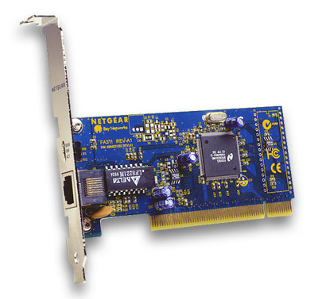
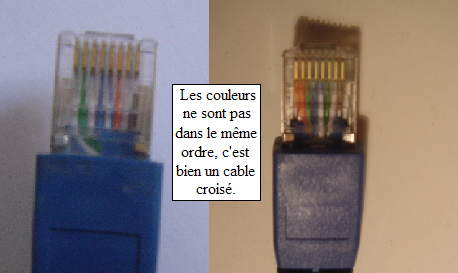
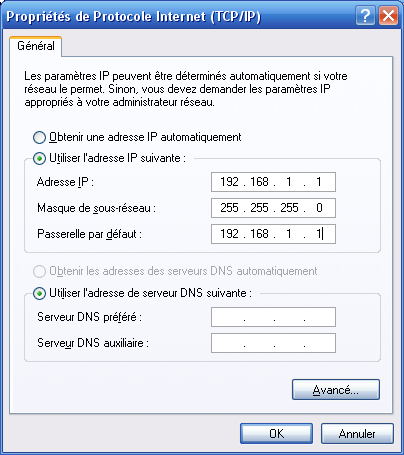
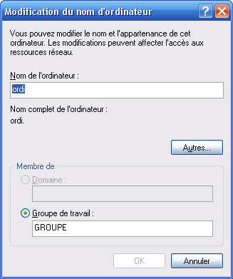
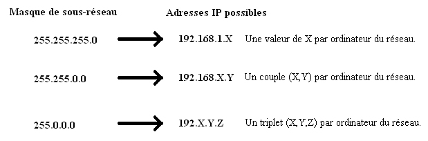

Dans ce tutoriel, nous allons voir comment mettre deux (ou plus) ordinateurs en réseau. Autrement dit, ces machines seront en mesure d'échanger des données. La manœuvre n'est vraiment pas compliquée mais il peut être bon de la mettre au clair... en partant de zéro bien sûr. C'est bien le principe de ce site ! ;)
Le cours est composé de cinq parties, mais la dernière est juste un petit "plus" pour comprendre quelques petites choses supplémentaires, ou mettre plus de deux ordinateurs en réseau. Si vous êtes pressés, ce n'est pas vraiment la peine de la lire.
Avant tout, il faut s'assurer de quelques petites choses indispensables... Premièrement, les 2 ordinateurs doivent avoir une carte réseau Ethernet chacun.
Mais à quoi ça ressemble, ça, une carte réseau ?
Eh bien ça ressemble à ceci :

Bon c'est vrai, elle doit être cachée dans le PC, donc on ne la voit pas... L'important, c'est le port RJ45 qu'offre cette carte.
Le câble Ethernet
Si vous voulez mettre directement deux ordinateurs en réseau (sans passer par un switch, un routeur...), alors il vous faut un câble Ethernet croisé. Si c'est pour plus de deux machines, ce sont des câbles droits qu'il vous faudra (mais j'en reparlerai dans la dernière partie).
Mais alors comment reconnaître un câble croisé ? De chaque côté du câble, vous devez avoir un connecteur (ça c'est sûr... ^^ ). À l'intérieur de ces connecteurs, vous devez voir 4 fils de couleurs différentes. Chacun de ces fils étant lui-même composé de deux fils, mais on ne les voit pas, donc... pas besoin d'en parler ici. L'important est de vérifier que ces 4 couleurs ne soient pas dans le même ordre des deux côtés du câble.
Voici une petite photo pour vous aider à comprendre :

Si les couleurs sont dans le même ordre, vous avez un câble droit ; ce n'est pas bon pour connecter deux PC directement.
À ce stade, vous devez avoir deux PC avec chacun une carte réseau, et un câble croisé. On va donc pouvoir configurer les adresses IP comme il faut.
Dans cette partie, nous allons voir comment configurer les adresses IP de chaque PC pour qu'ils puissent communiquer.
L'adresse IP
IP signifie Internet Protocol. Cette adresse sert à identifier chacun de vos ordinateurs. Elle est composée de 4 octets compris entre 0 et 255. Ainsi, vous pouvez par exemple avoir comme adresse IP : 192.168.1.1 .
Mais au fait, comment peut-on savoir quelle est notre adresse IP ?
Rien de plus facile mais il faut le savoir... Dans l'invite de commandes de Windows (Démarrer -> Exécuter -> tapez cmd avant de valider en appuyant sur OK) il suffit de taper ipconfig et d'appuyer sur Entrée. En tant que zéro, c'est normal de ne pas savoir ça, non ? ;) Si votre câble est branché, vous devez avoir toutes les informations qu'il vous faut sous Carte Ethernet connexion au réseau local.
:o Mais c'est quoi, tous ces trucs avec tout plein de numéros ???
Effectivement, il n'y a pas que l'adresse IP. Ici nous ne nous servirons que d'elle et du masque de sous-réseau. Ce dernier va servir pour définir le plan d'adressage. Je vous explique.
Attribuer une adresse IP à un ordinateur
Nous allons donc donner à chacun de nos 2 ordinateurs une adresse IP et le masque de sous-réseau de notre tout petit réseau local. Étant donné que nous n'avons que 2 ordinateurs, nous pouvons prendre le masque 255.255.255.0. C'est bien suffisant ! :)
Premier ordinateur
Sur le premier PC, cliquez sur Démarrer, Connexions puis Afficher toutes les connexions. Vous avez alors une fenêtre avec toutes vos connexions. Faites un clic droit sur Connexion au réseau local et choisissez Propriétés.
Cliquez une fois sur Protocole Internet (TCP/IP) et choisissez Propriétés.
Une nouvelle fenêtre apparaît :

Cochez l'option Utiliser l'adresse IP suivante et entrez l'adresse IP du premier ordinateur. Le masque de sous-réseau doit se mettre automatiquement (sinon mettez celui de l'image). Enfin, il faut paramétrer la passerelle par défaut : vous pouvez mettre la même que pour l'adresse IP.
En dessous, inutile de remplir.
Second ordinateur
Sur le deuxième PC, vous devez faire exactement la même chose sauf pour l'adresse IP, qui devra être 192.168.1.2 ou 192.168.1.3, ou encore 192.168.1.254... Peu importe du moment que les 3 premiers nombres sont identiques à ceux de l'adresse IP de l'ordinateur 1 et que le dernier nombre change.
Voilà : il ne reste plus qu'à mettre les 2 ordinateurs dans le même groupe de travail ;) .
Pour que les deux ordinateurs puissent "se parler" entre eux, il faut les mettre dans le même groupe de travail. Cette opération est sans doute la plus simple à effectuer, mais elle est nécessaire pour pouvoir facilement passer des fichiers d'un PC à l'autre.
Changer le groupe de travail d'un ordinateur
Pour cela, vous devez faire un clic droit sur le Poste de travail et choisir encore une fois Propriétés. Dans la fenêtre qui apparaît, choisissez l'onglet Nom de l'ordinateur puis Modifier. Vous devez avoir cette fenêtre :

Vous avez alors deux champs à remplir : le nom de l'ordinateur (mettez ce que vous voulez) et le nom du groupe de travail.
Faites cette manipulation sur les 2 ordinateurs (en mettant un même groupe de travail, c'est important) et enfin, vos ordinateurs seront en réseau. Nous allons vérifier ça tout de suite.
Petite vérification
Pour vérifier que vos 2 ordinateurs sont bien reliés entre eux, il est possible de "pinger" l'un à partir de l'autre. Cela signifie que vous allez vérifier que les deux ordinateurs peuvent communiquer entre eux. Dans l'invite de commande de Windows (dont on s'est servi tout à l'heure avec la commande ipconfig), tapez ping suivi de l'adresse IP de l'autre ordinateur. Par exemple, sur l'ordinateur 1, tapez : ping 198.168.1.2. Vous avez alors deux possibilités. Dans le plus mauvais cas, vous avez un message d'erreur : "Délai d'attente de la demande dépassé" . C'est le cas lorsque vos ordinateurs ne communiquent pas, ils ne sont pas en réseau. Une des étapes ci-dessus s'est mal passée... :( Mais si tout s'est bien passé, vous avez 4 réponses positives ("Réponse de ..."), avec un temps de réponse et plein de bonnes choses. Alors là c'est bon ! Les deux PC sont en réseau ! Ô joie !
Il ne vous reste plus qu'à aller dans Favoris réseau dans le menu Démarrer puis de cliquer sur Voir les ordinateurs du groupe de travail (à gauche). Vous voyez apparaître l'ordinateur sur lequel vous êtes, mais aussi celui qui est en réseau ! C'est gagné ! Mis à part, peut-être, qu'aucun fichier n'est partagé... Je vous explique comment faire tout de suite.
Mais tous les fichiers d'un ordinateur ne sont pas disponibles sur l'autre ! Seuls les fichiers et dossiers partagés le sont.
Pour partager un dossier, faites un clic droit dessus et choisissez Partage et sécurité.... Allez dans l'onglet Partage. Si un message de sécurité est écrit, cliquez dessus comme demandé, ce n'est pas un problème (à part peut-être si vous voulez vous connecter avec une personne malveillante... :pirate: ). Il ne vous reste plus qu'à cocher Partager ce dossier sur le réseau et de donner un nom au partage.
À partir de là, ce dossier sera disponible à partir de l'autre ordinateur, via les favoris réseau, comme expliqué ci-dessus.
Dans la dernière partie, je vais brièvement vous expliquer comment mettre plus de 2 ordinateurs en réseau et faire un petit point sur les adresses IP.
Cette partie est juste un petit bonus par rapport au reste... En effet à l'heure qu'il est, vos deux ordinateurs devraient être en réseau si tout s'est bien passé (et si j'ai été clair :p ) ! Mais pour en savoir un peu plus, vous pouvez lire cette partie !
Mettre plus de 2 ordinateurs en réseau
La "multiprise"
À partir de trois ordinateurs, on ne peut plus les relier directement avec un seul câble (croisé, je vous le rappelle). Il faut maintenant passer par un hub. Un hub est en fait une sorte de multiprise, sur lequel on branche tous les ordinateurs du réseau.
Vous vous souvenez du câble Ethernet croisé ? Les couleurs des fils des connecteurs de chaque bout n'étaient pas dans le même ordre. Un câble droit est identique à un câble croisé à première vue. La différence est que cette fois, de chaque côté, les fils de couleur sont dans le même ordre.
Chaque ordinateur doit donc être relié au hub par un câble droit.
Pour le reste, c'est exactement la même chose qu'avec deux ordinateurs. Le principe du plan d'adressage IP est rigoureusement le même.
Un autre type de "multiprise" : le switch
À ce stade, vos ordinateurs peuvent être en réseau. Mais pour améliorer un peu ce réseau, il est possible de remplacer le hub par un switch (ou commutateur). Ce dernier est plus "intelligent" qu'un hub car il permet de mémoriser les chemins empruntés par une certaine IP vers une autre. Le switch peut aussi être configuré pour permettre à certaines adresses IP (donc certains ordinateurs) d'être prioritaires par rapport aux autres... Bref, c'est un bien bel outil. Mais le prix n'est pas le même, évidemment...
Le plan d'adressage IP
Le masque de sous-réseau est composé, comme l'adresse IP, de 4 octets. Généralement, ils prennent les valeurs 0 ou 255. Il est inséparable de l'adresse IP. L'un ne va pas sans l'autre ! Et pour cause, le masque de sous-réseau indique comment les adresses IP ont le droit d'être à l'intérieur du réseau.
Le 255 indique que l'octet équivalent dans l'adresse IP sera fixe. Le 0 indique que l'octet équivalent dans l'adresse IP sera libre.
Enfin, le masque définit tout le réseau, il doit donc être le même sur toutes les machines qui composent le réseau.
J'explique avec l'exemple de deux ordis en réseau :
Ordi 1 :
adresse IP : 192.168.1.1
Masque de sous-réseau : 255.255.255.0
Ordinateur 2 :
adresse IP : 192.168.1.2
Masque de sous-réseau : 255.255.255.0
Ici, les trois 255 montrent que les trois premiers nombres des adresses IP doivent être fixes. C'est bien le cas car nous avons comme adresse IP : 192.168.1.X. Le X vaut 1 pour l'ordi 1 et il vaut 2 pour l'ordi 2. Avec un tel masque, on peut donc mettre 254 machines en réseau (le X peut aller de 1 à 254, le 0 et le 255 étant réservés). Mais avec le masque 255.255.0.0, on peut en mettre beaucoup plus. Les adresses IP seront alors 192.168.X.Y et chaque ordi du réseau aura un X et un Y qui lui sera propre. L'important est qu'il ait bien les 2 premiers nombres de son adresse IP cohérents avec le réseau (192 et 168 dans ce cas).
Vous comprendrez donc qu'avec le masque 255.0.0.0 on peut mettre énormément de machines en réseau !
Cela définit les classes des réseaux. Il y a trois classes : A, B et C. La classe A fixe un octet et laisse les trois autres libres. Le masque de sous-réseau sera donc 255.0.0.0. La classe B fixe deux octets et laisse les deux autres libres. Le masque de sous-réseau sera donc 255.255.0.0. La classe C fixe trois octets et laisse le dernier libre. Le masque de sous-réseau sera donc 255.255.255.0.
Encore une petite chose très importante : une adresse IP est unique dans un réseau ! Il ne peut pas y avoir deux ordis avec la même ! Où iraient les informations destinées à l'adresse IP en question dans ce cas ? Mais alors en se connectant sur Internet, chaque site ayant une adresse IP, il est impératif qu'aucun des ordinateurs de votre réseau n'ait la même IP que le site que vous visitez ! Pour cela, il existe des plages d'adresses privées pour les réseaux locaux. Les voici :
pour un réseau de classe A : 10.0.0.0 ;
pour un réseau de classe B : 172.16.0.0 à 172.31.0.0 ;
pour un réseau de classe C : 192.168.0.0 à 192.168.255.0.
Voici un schéma récapitulant à peu près ce que je viens de dire (attention, sur le schéma, les adresses privées ne sont pas respectées pour les classes A et C, mais vous avez compris le truc ! ;) ) :

Avec ceci, vous aurez peut-être appris quelques petites choses sur les réseaux locaux ! Ce n'est pas indispensable pour en faire un mais c'est plus sympa de savoir ce qu'on fait, non ?
Voilà, voilà ; si tout s'est bien passé, vous savez à présent comment mettre deux ordinateurs en réseau et les faire communiquer ! Ce n'est pas bien compliqué mais si on ne l'explique pas une fois au moins, je ne vois pas comment on peut deviner tout ça ! :)